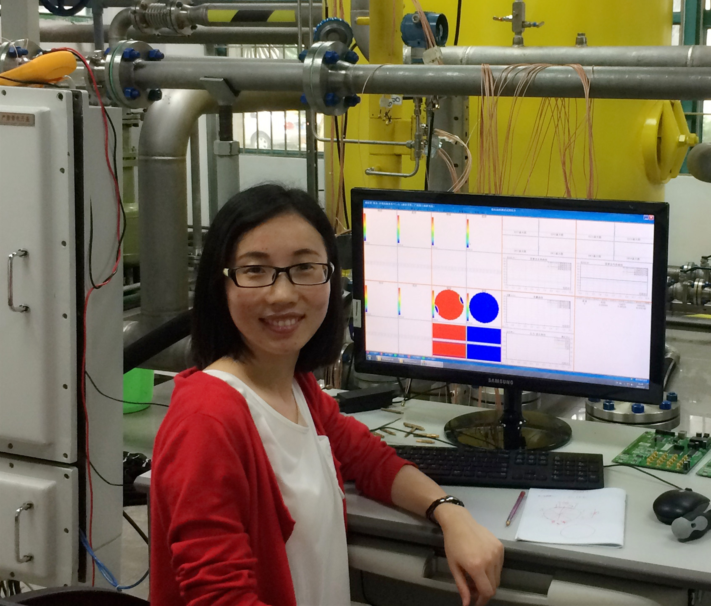

<!DOCTYPE html PUBLIC "-//W3C//DTD XHTML 1.0 Transitional//EN" "http://www.w3.org/TR/xhtml1/DTD/xhtml1-transitional.dtd">
<!-- saved from url=(0024)http://pengmingsong.com/ -->
<html xmlns="http://www.w3.org/1999/xhtml"><head><meta http-equiv="Content-Type" content="text/html; charset=UTF-8">

<title>Yinyan Liu's Homepage</title>
<style type="text/css">
<!--
.STYLE8 {
	font-family: Georgia, "Times New Roman", Times, serif;
	font-size: 32px;
	font-style: italic;
	color: #000033;
}
body,td,th {
	font-family: Times New Roman, Times, serif;
	font-size: 18px;
}
.STYLE17 {font-family: Georgia, "Times New Roman", Times, serif}
.STYLE18 {font-size: 18px}
.STYLE34 {font-size: 16px}
.STYLE35 {color: #CCCCCC}
.STYLE75 {color: #0000FF}
.STYLE80 {color: #000000}
.STYLE85 {font-family: "Times New Roman", Times, serif; color: #000066; font-weight: bold; font-size: 22px; }
a:link {
	text-decoration: none;
	color: #0099FF;
}
a:visited {
	text-decoration: none;
}
a:hover {
	text-decoration: none;
	color: #009933;
}
a:active {
	text-decoration: none;
}
.STYLE90 {color: #FF0000; font-weight: bold; }
.STYLE98 {
	color: #333333;
	font-weight: bold;
	font-size: 14px;
}
.STYLE100 {color: #CC0033; font-size: 20px; font-style: italic; font-family: "Times New Roman", Times, serif;}
.STYLE109 {
	font-size: 18pt;
	color: #CC0033;
}
.STYLE122 {
	color: #F91F06;
	font-size: 16px;
}
.STYLE132 {color: #0066FF}
.STYLE136 {font-size: 22pt}
.STYLE137 {font-weight: bold; color: #333333;}
.STYLE141 {color: #0000CC; font-weight: bold; }
.STYLE157 {
	color: green;
	font-weight: bold;
}
.STYLE162 {font-family: Arial, Helvetica, sans-serif; font-size: 14px; font-style: italic; }
.STYLE178 {color: green; font-weight: bold; font-size: 16pt; }
.STYLE180 {color: #FF0000}
.STYLE186 {font-weight: bold; color: #4f4f4f; }
.STYLE188 {
	color: #4f4f4f;
	font-family: Arial, Helvetica, sans-serif;
	font-size: 14px;
}
.STYLE189 {
	font-family: Arial, Helvetica, sans-serif;
	font-size: 14px;
}
.STYLE193 {font-size: 14px}
.STYLE197 {font-family: Arial, Helvetica, sans-serif}
.STYLE198 {font-size: 17px; font-family: Arial, Helvetica, sans-serif; }
.STYLE200 {
	font-size: 14px;
	font-family: Arial, Helvetica, sans-serif;
	color: #4f4f4f;
}
.STYLE202 {
	color: #33CC00;
	font-weight: bold;
}
.STYLE203 {font-size: 14px; font-family: Arial, Helvetica, sans-serif; color: #4f4f4f; font-weight: bold; }
.STYLE212 {	color: #0033FF;
	font-family: "Courier New", Courier, monospace;
	font-weight: bold;
	font-size: 16;
}
.STYLE216 {color: #0033FF; font-weight: bold; font-size: 16; }
.STYLE217 {color: #0033FF; font-family: "Courier New", Courier, monospace; }
.STYLE220 {color: #333333; font-family: Arial, Helvetica, sans-serif; font-size: 14px;}
.STYLE223 {font-size: 14px; color: #666666; font-family: Arial, Helvetica, sans-serif;}
.STYLE225 {color: #FF0000; font-size: 16pt; }
.STYLE227 {font-size: 17px}
.STYLE228 {color: #008000}
.STYLE233 {font-family: "华文楷体"}
.STYLE235 {font-size: 14px; font-weight: bold; }
.STYLE237 {
	font-size: 16pt;
	color: #000000;
}
.STYLE238 {font-size: 24px}
.STYLE239 {font-size: 18pt}
.STYLE246 {font-style: italic}
.STYLE248 {font-weight: bold; color: #333333; font-size: 16pt; }
.STYLE249 {color: green}
.STYLE250 {font-weight: bold; color: #4f4f4f; font-size: 16pt; }
.STYLE251 {color: green; font-weight: bold; font-size: 18pt; }
.STYLE256 {font-size: 17px; font-family: Arial, Helvetica, sans-serif; font-weight: bold; }
.STYLE257 {
	color: #6666FF;
	font-weight: bold;
}
.STYLE258 {font-size: 18pt; color: #6666FF; }
.STYLE260 {font-size: 22pt; color: #6666FF; }
.STYLE262 {color: #6666FF}
.STYLE263 {color: #0099FF}
.STYLE265 {
	font-family: "宋体";
	font-size: 12px;
}
.STYLE266 {font-family: "华文楷体"; font-size: 14px; }
.STYLE267 {color: #333333; font-weight: bold; font-size: 14px; font-family: Arial, Helvetica, sans-serif; }
-->
</style>
</head>
<body>
<blockquote>
  <table border="0" width="88%">
    <tbody>
      <tr>
        <td width="27%" height="215"><div align="center" class="STYLE90" src="">
            <div align="left"><a href="http://yinyanliu.com"></a></div>
        </div></td>
        <td width="73%"><p><br>
          <span class="STYLE85"> Yinyan Liu 刘银艳 </span><br>
            <span class="STYLE100"><span class="subtitle1"><span style="FONT-FAMILY: &#39;Monotype Corsiva&#39;; COLOR: green; FONT-SIZE: 24pt; mso-bidi-font-family: Arial"><span class="STYLE200">Master candidate</span></span></span></span><br>
              <span class="STYLE200">Department of Automation<a href="mailto:spm15@mails.tsinghua.edu.cn" class="STYLE189"><br>
            </a>Tsinghua University, Beijing,  China</span><span class="STYLE18"><a href="mailto:spm15@mails.tsinghua.edu.cn" class="STYLE189"><br>
            </a></span><span class="STYLE200"><br>
            Email: liuyy15@mails.tsinghua.edu.cn<br>
            <!--QQ/WeChat: 406068095;  Skype ID: yulun100</span><br />-->
            </span><br>
            <span class="STYLE200">[<a href="CV/CV_YinyanLiu.pdf">CV</a>] [Google Scholar]  [LinkedIn]</span><br>
            <span class="STYLE256"><br>
            </span><span class="STYLE198"><br>
        </span></p></td>
      </tr>
    </tbody>
  </table>
  <br>
  <table width="715" border="0" align="left" cellspacing="4" bordercolor="#999999">
    <tbody><tr bordercolor="#333333">
      <th width="111" height="30" scope="col"><a href="http://yinyanliu.com/#biography" class="STYLE212">Biography</a></th>
      <th width="123" scope="col"><div align="center"><span class="STYLE217" style="font-size: 16"><b style="mso-bidi-font-weight: normal"><a href="http://yinyanliu.com/#Education">Education</a></b></span></div></th>
      <th width="142" scope="col"><div align="center"><span class="STYLE217" style="font-size: 16"><b style="mso-bidi-font-weight: normal"><a href="http://yinyanliu.com/#Publications">Publications</a></b></span></div></th>
      <th width="123" scope="col"><div align="center"><span class="STYLE216" style="font-family: &quot;Courier New&quot;, Courier, monospace"><a href="http://yinyanliu.com/#Activities">Activities</a></span></div></th>
      <th width="88" scope="col"><div align="center"><a href="http://yinyanliu.com/#Awards" class="STYLE212">Awards</a></div></th>
      <th width="88" scope="col"><div align="center"><span class="STYLE216" style="font-family: &quot;Courier New&quot;, Courier, monospace"><a href="http://124.207.250.90/staff/zhangjian/link/"><b style="mso-bidi-font-weight: normal"></b></a></span><span class="STYLE216" style="font-family: &quot;Courier New&quot;, Courier, monospace"><a href="http://yinyanliu.com/#Awards">Links<b style="mso-bidi-font-weight: normal"> </b></a></span></div>
        <span class="STYLE216" style="font-family: &quot;Courier New&quot;, Courier, monospace"><a href="http://124.207.250.90/staff/zhangjian/link/"><b style="mso-bidi-font-weight: normal"><o:p></o:p>
      </b></a></span>
        <div align="center"><span class="STYLE216" style="font-family: &quot;Courier New&quot;, Courier, monospace"><a href="http://124.207.250.90/staff/zhangjian/link/"><b style="mso-bidi-font-weight: normal"></b></a></span><span class="STYLE216" style="font-family: &quot;Courier New&quot;, Courier, monospace"><a href="http://124.207.250.90/staff/zhangjian/link/"><b style="mso-bidi-font-weight: normal"></b></a></span></div></th>
    </tr>
  </tbody></table>
  <p><br>
    <br>
  </p>
  <hr>
  <p align="justify"><span class="subtitle1"><span style="font-size: 22pt"><b style="mso-bidi-font-weight: normal"><span style="FONT-FAMILY: &#39;Monotype Corsiva&#39;; COLOR: green; mso-bidi-font-family: Arial"><a name="Bio" id="Bio"></a><span class="STYLE258">Biography</span></span></b></span><span class="STYLE257" style="font-size: 18pt"><span style="FONT-FAMILY: &#39;Bauhaus 93&#39;; mso-bidi-font-family: Arial">
    <o:p></o:p>
  </span></span></span><br>
    <br>
    <span class="STYLE200">   I am now a 2nd year M.S candidate in <a href="http://www.tsinghua.edu.cn/publish/auen/1344/index.html">Institute of Measurement and Electronic   Technology</a> at Tsinghua University under the supervision of Prof. <a href="http://www.sz.tsinghua.edu.cn/publish/sz/143/2014/20140619145906419451539/20140619145906419451539_.html" target="_blank" rel="nofollow">Yi Li</a>. </span></p>
  <p align="justify"><span class="STYLE200">My current research interests include: <strong>Electrical Tomography </strong>and <strong>Multiphase Flow measurement</strong></span><span class="STYLE200">. </span></p>
  <hr>
  <p align="justify" class="subtitle1"><span style="font-size: 22pt"><b style="mso-bidi-font-weight: normal"><span style="FONT-FAMILY: &#39;Monotype Corsiva&#39;; COLOR: green; mso-bidi-font-family: Arial"><a name="Education" id="Education"></a><span class="STYLE258">Education</span></span></b><span class="STYLE257" style="font-size: 18pt"><span style="FONT-FAMILY: &#39;Bauhaus 93&#39;; mso-bidi-font-family: Arial">
  <o:p></o:p>
  </span></span><span style="color: #6666FF"><b style="mso-bidi-font-weight: normal"><span style="FONT-FAMILY: &#39;Bauhaus 93&#39;; mso-bidi-font-family: Arial">
  <o:p></o:p>
  </span></b></span><b style="mso-bidi-font-weight: normal"><span style="FONT-FAMILY: &#39;Bauhaus 93&#39;; COLOR: green; mso-bidi-font-family: Arial">
  <o:p></o:p>
  </span></b></span>  </p>
  <ul>
    <!--<li class="STYLE189"><span class="subtitle1 STYLE122 STYLE189 STYLE193" align="justify"><strong>Ph.D. Candidate </strong></span> in Computer Engineering<br />
      <span class="STYLE246"><a href="http://www.hit.edu.cn/">Department of Electrical and Computer Engineering, Northeastern University, Boston, USA</a></span><span class="STYLE162">, Sep. 2017 ~ Present </span></li>-->
    <li class="STYLE189"><span class="STYLE141">M. E. Degree</span><span class="STYLE80"> in </span>Control Engineering<br>
        <em><a href="http://www.tsinghua.edu.cn/">Department of Automation, Tsinghua University, Beijing, China</a>, Sep. 2015 ~ Jul. 2018</em></li>
    <li class="STYLE189"><span class="STYLE186">B. S. Degree </span><span class="STYLE80"> in </span>Automation<span class="STYLE189"><br>
          <em><a href="http://english.ncepu.edu.cn/">School of Control and Computer Engineering, North China Electric Power University, Beijing, China<span class="STYLE80">,</span> </a>Sep. 2007 ~ Jul. 2011　　</em></span><span class="STYLE162">　</span><br>
    </li>
  </ul>
  <p align="justify" class="STYLE85"><span class="subtitle1 STYLE136"><b style="mso-bidi-font-weight: normal"><span style="FONT-FAMILY: &#39;Monotype Corsiva&#39;; COLOR: green; mso-bidi-font-family: Arial"><a name="ResearchExp" id="ResearchExp"></a><span class="STYLE258">Work<span class="STYLE249"> </span>Experiences</span></span><span class="STYLE239" style="FONT-FAMILY: &#39;Bauhaus 93&#39;; COLOR: #6666FF; mso-bidi-font-family: Arial">
    <o:p></o:p>
  </span></b></span></p>
  <ul>
    <li class="STYLE189"><span class="STYLE80"><span class="STYLE137">Control Engineer</span></span>  <br>
    <em>Department of Equipment<span class="STYLE80">,</span>	Shanxi Zhangze Power Co., LTD<span class="STYLE80">, China, Jul. 2011 ~ Jun. 2015</span></em></li>
  </ul>
  <blockquote>
    <p>&nbsp;</p>
  </blockquote>
  <ul>
    <li class="STYLE189"><span class="STYLE80"><span class="STYLE137">Test Engineer</span></span> <br />
    <em>Department of Equipment<span class="STYLE80">,</span> Shanxi Zhangze Power Co., LTD<a href="http://www.tsinghua.edu.cn/"><span class="STYLE80">, China, Jul. 2011 ~ Jun. 2015</span></a></em><br>
    </li>
  </ul>
  <hr>
  <span class="subtitle1 STYLE136"><span style="font-style: italic"><b style="mso-bidi-font-weight: normal"><span style="FONT-FAMILY: &#39;Monotype Corsiva&#39;; COLOR: green; mso-bidi-font-family: Arial"><a name="Publications" id="Publications"></a><span class="STYLE258">Publications</span></span></b></span></span> &nbsp;
  <p class="STYLE248"><span class="STYLE249" style="font-family: &#39;Monotype Corsiva&#39;; font-weight: bold;">-</span><span style="font-family: &#39;Monotype Corsiva&#39;; color: #333333;"><strong>Journal Articles</strong></span>  </p>
  <table width="101%" height="154" border="0" cellpadding="1" cellspacing="1" bordercolor="#FF0000">
    <tbody>
      <tr>
        <td height="152" class="STYLE188"><ol>
          <li>
            <div align="justify">
              <p><strong>Experimental measurement of oil-water two-phase flow by data fusion of electrical tomography sensors and venturi tube</strong> [<a href="papers/Liu_2017_Meas._Sci._Technol._28_095301.pdf">PDF</a>]  <br>
                <strong>Yinyan Liu</strong>,Yuchi Deng, Maomao Zhang, Peining Yu and Yi Li*<br>
                <em><a href="http://iopscience.iop.org/journal/0957-0233">Measurement Science and Technology</a></em> (<strong>MST</strong>)<em>,  25(9), 2017.</em></p>
              </div>
          </li>
          <li>
            <div align="justify">
              <p><strong>Image reconstruction algorithms for electrical capacitance tomography based on ROF model using new numerical techniques</strong> [<a href="papers/Chen_2017_Meas._Sci._Technol._28_035404.pdf">PDF</a>]<br>
                Jiaoxuan Chen, Maomao Zhang, <strong>Yinyan Liu</strong>, Jiaoliao Chen and Yi Li<br>
                <em><a href="http://iopscience.iop.org/journal/0957-0233">Measurement Science and Technology</a></em> (<strong>MST</strong>)<em>,  25(1), 2017.</em></p>
            </div>
            <br>
              <div align="justify">            </div>
          </li>
          </ol></td>
      </tr>
    </tbody>
  </table>
  <p class="STYLE250"><span style="font-family: &#39;Monotype Corsiva&#39;;">-Conference Papers </span></p>
  <table width="101%" border="0" cellpadding="1" cellspacing="1" bordercolor="#FF0000">
    <tbody>
      <tr>
        <td class="STYLE188"><ol>
        <li><strong>Experimental investigation of gas-oil two-phase flow using electrical capacitance tomography</strong> [PDF] <br />
                <strong>Yinyan Liu</strong> , Yuchi Deng, Yi Li<br />
                <em>IEEE International Conference on Imaging Systems and Techniques</em> (<strong>IST</strong>)<em>, Oct. 2017.</em><br>
                <div align="justify"><div align="justify">
              </div>
            </div>
        </li>
            <!--<li>
              <div align="justify">
                <div align="justify"> 
                  <p><strong>NTIRE 2017 Challenge on Single Image
Super-Resolution: Methods and Results </strong> [PDF]<br />
                    Radu Timofte, ..., <strong>Yulun Zhang</strong>, ..., et al.  <br />
                    <em>IEEE CVPR New Trends in Image Restoration
and Enhancement workshop and challenge on image super-resolution (<strong>CVPR NITRE</strong>), Hawaii, USA, Jul. 2017. </em> </p>
                </div>
              </div>
            </li>-->
        </ol></td>
      </tr>
    </tbody>
  </table>
  <hr>
  <p class="STYLE85"><span style="font-size: 22pt"><span class="STYLE157" style="font-family: &#39;Monotype Corsiva&#39;"><a name="Activities" id="Activities"></a><span class="STYLE258">Professional Activities</span></span></span></p>
</blockquote>
<blockquote>
<span class="STYLE178" style="font-family: &#39;Monotype Corsiva&#39;">-</span><span class="STYLE248" style="font-family: &#39;Monotype Corsiva&#39;">Attend Conferences </span> </blockquote>
<blockquote>
  <ul type="square">
    <li class="STYLE200"><em>IEEE International Conference on Imaging Systems and Techniques</em>, IST2017, Oct. 2017, Beihang University, China.
      <span style="font-size: 22pt"><span class="STYLE257" style="font-size: 18pt"><span style="FONT-FAMILY: &#39;Bauhaus 93&#39;; mso-bidi-font-family: Arial">
      <o:p></o:p>
      </span></span></span></li></ul></blockquote>
<blockquote>
  <p class="STYLE85"><span style="font-size: 22pt"><span class="STYLE251" style="font-family: &#39;Monotype Corsiva&#39;"><span class="STYLE157" style="font-family: &#39;Monotype Corsiva&#39;"><a name="Awards" id="Awards"></a></span><span class="STYLE262">Awards</span></span><span class="STYLE262" style="font-size: 18pt"><b style="mso-bidi-font-weight: normal"><span style="FONT-FAMILY: &#39;Bauhaus 93&#39;; mso-bidi-font-family: Arial">
    <o:p></o:p>
  </span></b></span></span></p>
  <ul>
    <li class="STYLE200">Merit Student, Tianjin University of Science &amp; Technology, 2010, 2009</li>
    <li class="STYLE200">National Encouragement scholarship, Tianjin University of Science &amp; Technology, 2008, 2009, 2010</li>
    <li class="STYLE200">The third prize of eleventh &ldquo;Chanllenge Cup&rdquo; National College Student Curricular Academic Science and Technology Works Competition, 2009</li>
  </ul>
  <hr>
  <p class="STYLE85"><span style="font-size: 22pt"><span class="STYLE157" style="font-family: &#39;Monotype Corsiva&#39;"><a name="Links" id="Links"></a><span class="STYLE258">Useful Links</span></span></span> </p>
  <ul class="STYLE223">
    <!--<li class="STYLE189"><a href="https://csjianzhang.github.io/link/">Reproducible Research Websites </a></li>
    <li class="STYLE189"><a href="https://csjianzhang.github.io/link/">Academic Journals</a></li>
    <li class="STYLE189"><a href="https://csjianzhang.github.io/link/">Scholars' Homepage </a></li>-->
    <li class="STYLE189"><strong>Friends: </strong> <a href="http://media.au.tsinghua.edu.cn/qhdai.html">Qionghai Dai</a> (THU),<a href="http://medialab.sz.tsinghua.edu.cn/people/YongbingZhang.html" target="_blank" rel="nofollow"> Yi Li</a> (THU), <a href="http://yulunzhang.com/" target="_blank" rel="nofollow">Yulun Zhang</a> (NEU)<span class="STYLE189"><br>
    </span></li>
  </ul>
</blockquote>
<p><span class="STYLE189 STYLE263">Created on 2017/07/01. Last update : 2017/08/19</span></p>
<p>
<!-- Start of StatCounter Code for Default Guide -->
<script type="text/javascript">
var sc_project=11408466; 
var sc_invisible=0; 
var sc_security="7bc74d87"; 
var scJsHost = (("https:" == document.location.protocol) ?
"https://secure." : "http://www.");
document.write("<sc"+"ript type='text/javascript' src='" +
scJsHost+
"statcounter.com/counter/counter.js'></"+"script>");
</script>
<noscript><div class="statcounter"><a title="site stats"
href="http://statcounter.com/" target="_blank"></a></div></noscript>
<!-- End of StatCounter Code for Default Guide -->
<a href="https://clustrmaps.com/site/19pg1"  title="Visit tracker"></a>
</p></body></html>
